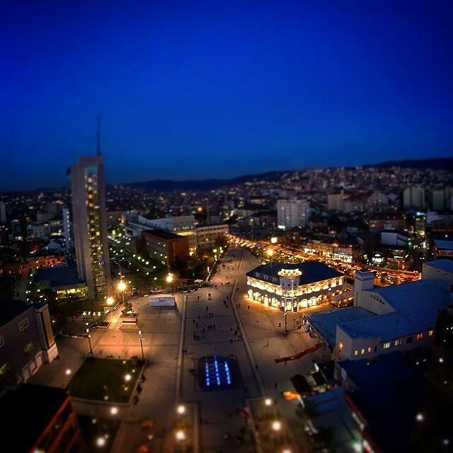
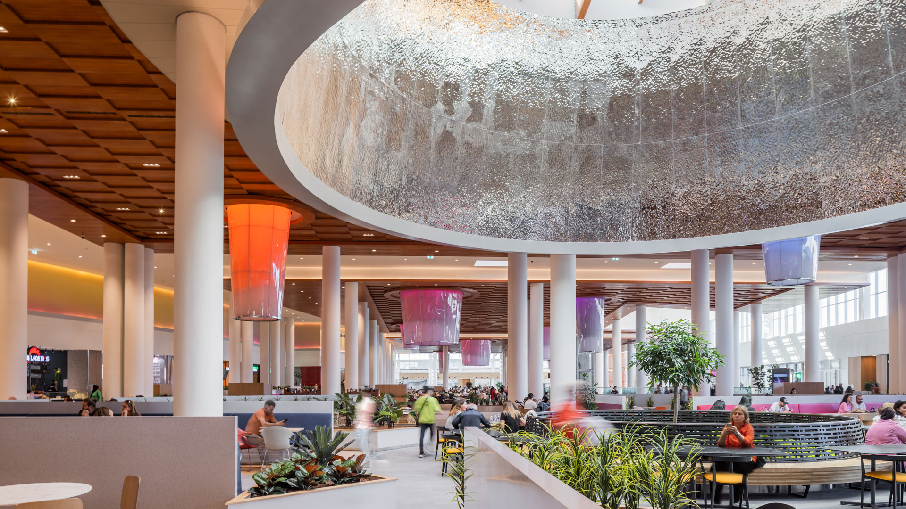
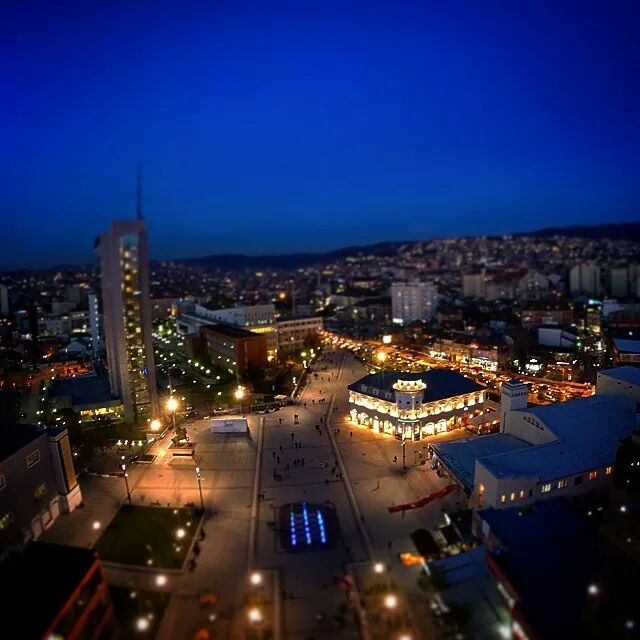
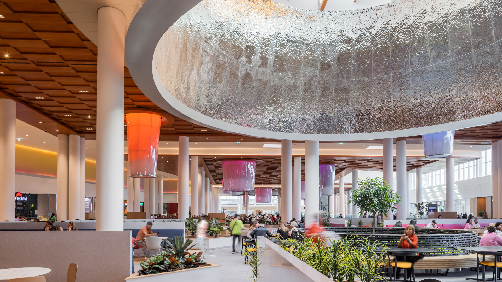

Visit the local landmark “Newborn”, whose name represents a new era for Kosova, following its independence.
Being the capital of the country, Prishtina has quite a lively nightlife, promising a fun evening when going out with friends or family.
The biggest shopping mall in the Balkans is in Prishtina. So, if you are the type who enjoys shopping, watching movies or even likes go-karting, consider visiting the newly built Prishtina Mall.